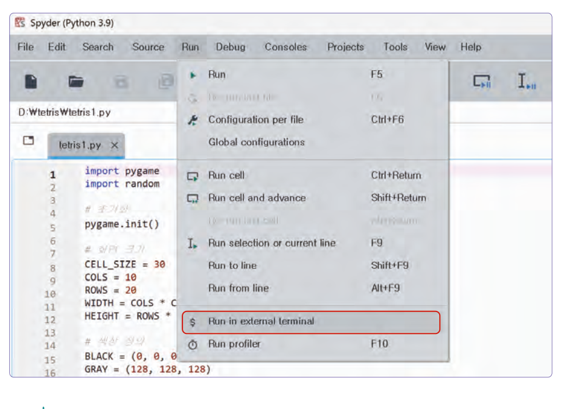
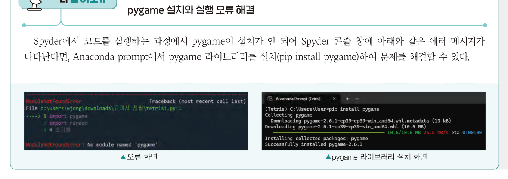
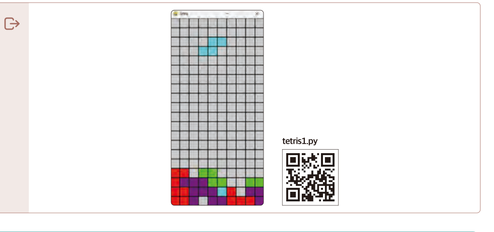
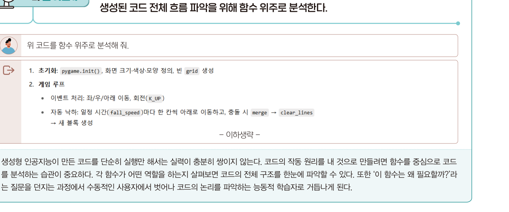
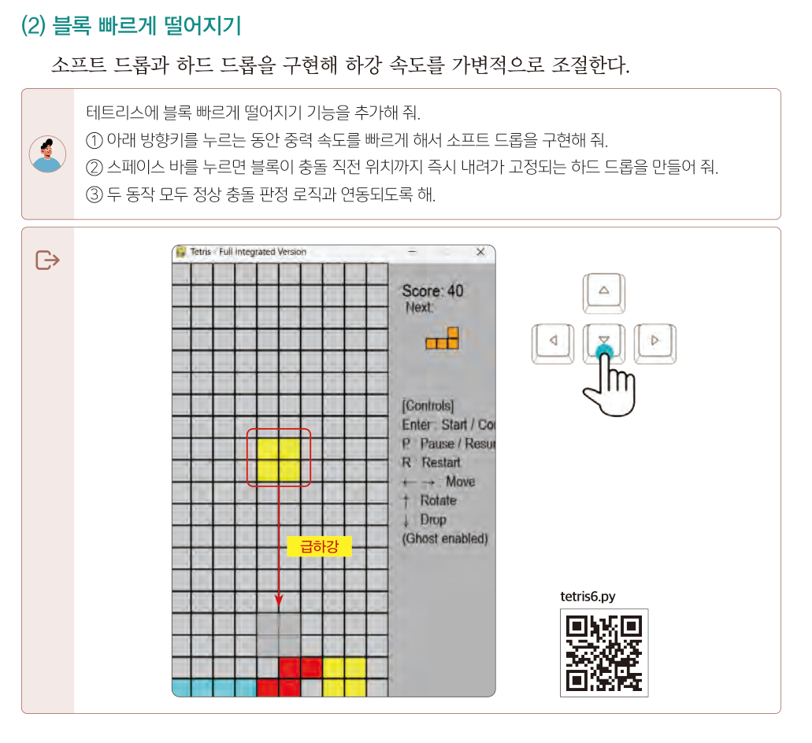
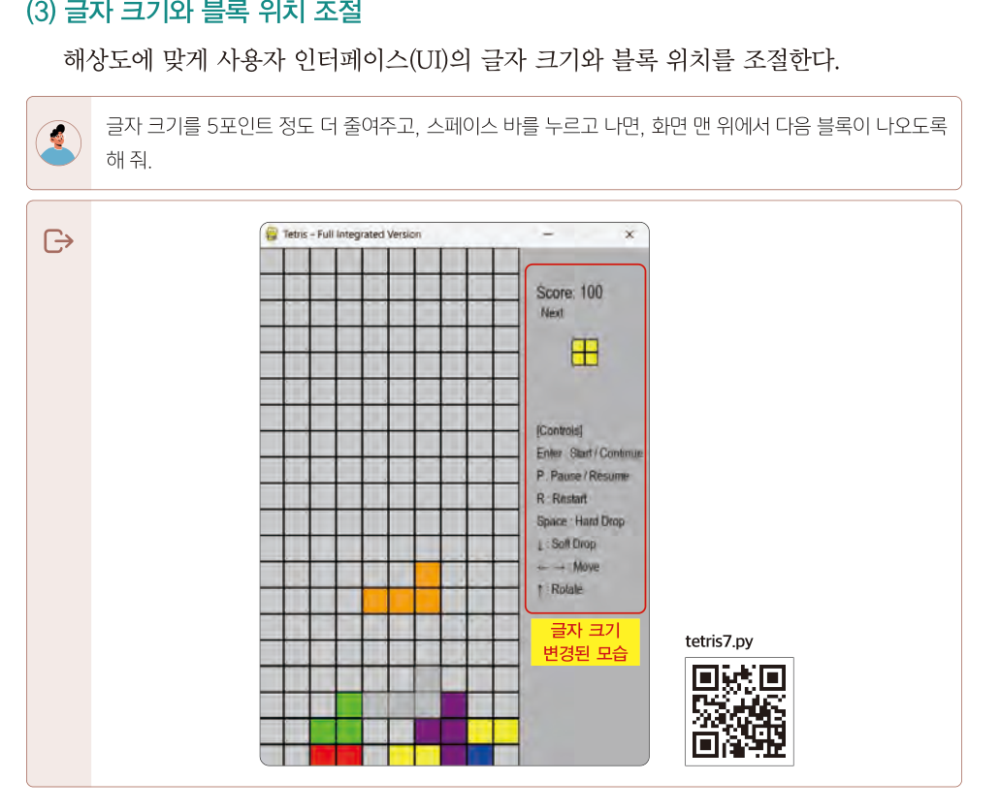
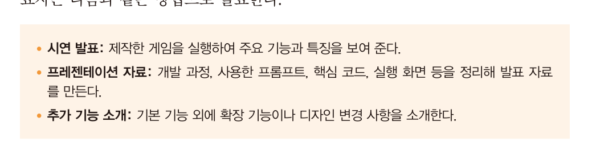
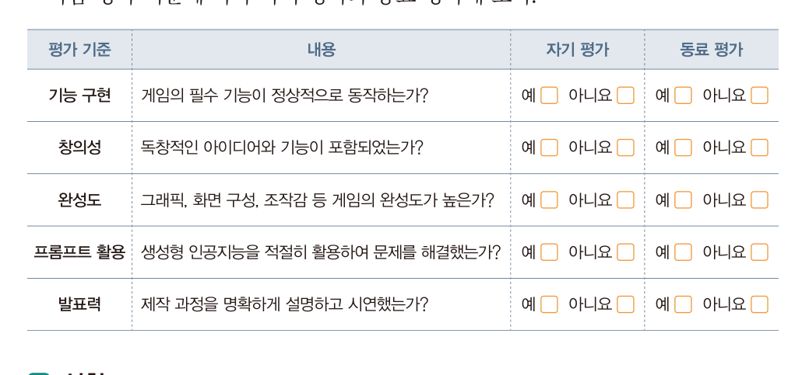
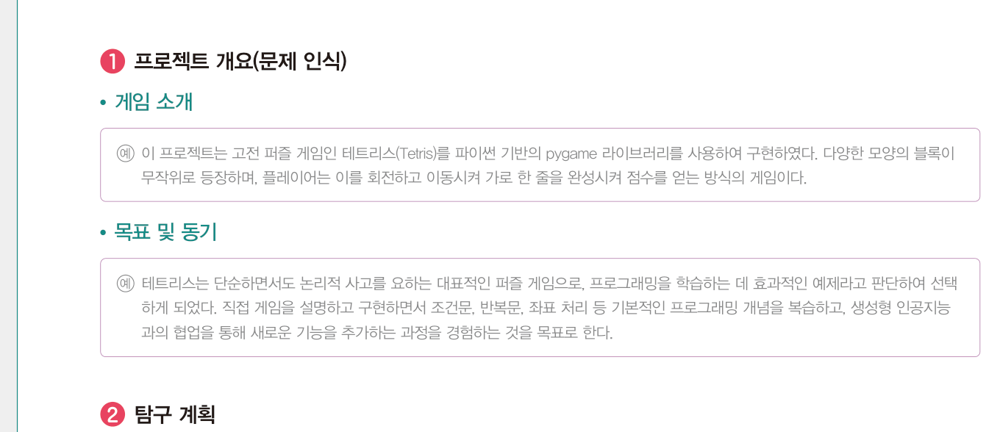
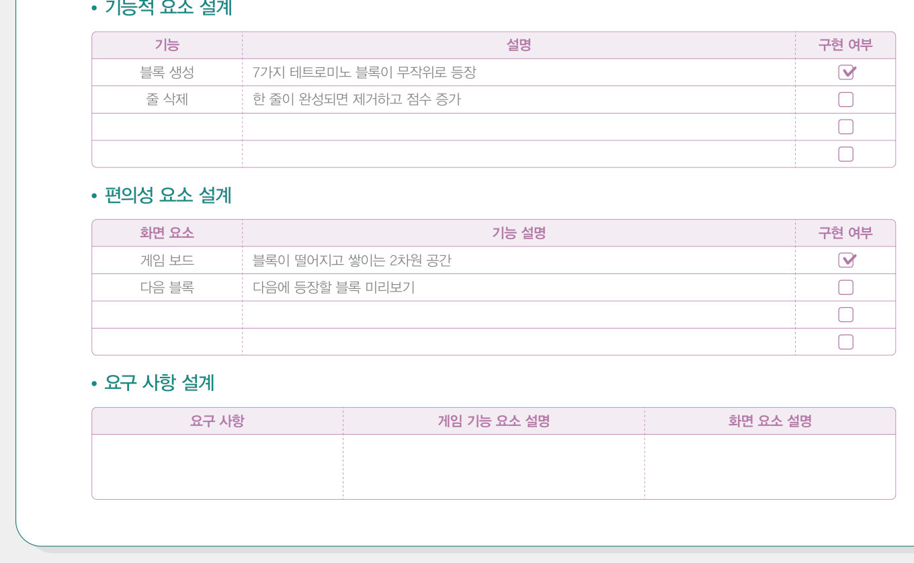

<!DOCTYPE html><html lang="ko"><head><meta charset="utf-8"><meta name="viewport" content="width=device-width,initial-scale=1">
<title>10회차 · 테트리스 게임 구현</title>
<link rel="stylesheet" href="style.css?v=12">
<style>
/* 10회차 전용 — 진행 체커 · 오류 해결 도우미 */
.steps{display:grid;gap:9px;margin:16px 0}
.stp{display:grid;grid-template-columns:96px 1fr 90px;gap:12px;align-items:center;border:1px solid var(--line);
 border-radius:4px;padding:13px 15px;background:rgba(255,255,255,.014);transition:.16s}
.stp.done2{border-color:rgba(139,192,164,.45);background:rgba(139,192,164,.07)}
.stp .fn{font-family:var(--mono);font-size:12.5px;color:var(--accent);font-weight:700}
.stp .ds{font-size:13px;color:var(--mut);line-height:1.6}
.stp .ds b{color:var(--tx)}
.stp button{font-size:11.5px;font-weight:700;border-radius:2px;padding:7px 0;cursor:pointer;font-family:var(--sans);
 border:1px solid var(--line2);background:transparent;color:var(--mut)}
.stp button:hover{border-color:var(--accent);color:var(--tx)}
.stp.done2 button{background:var(--green);color:var(--ink);border-color:transparent}
.prog{height:10px;background:rgba(255,255,255,.05);border-radius:5px;overflow:hidden;margin:14px 0 6px}
.prog i{display:block;height:100%;background:linear-gradient(90deg,#8bc0a4,#a9d4c0);transition:width .3s}
.progtx{font-size:12.5px;color:var(--mut)}
.progtx b{color:var(--accent);font-family:var(--serif);font-size:16px}
.dbg{border:1px solid var(--line);border-radius:4px;background:var(--ink2);padding:20px;margin:16px 0}
.dbg select,.dbg textarea{width:100%;background:rgba(255,255,255,.04);border:1px solid var(--line);border-radius:3px;
 color:var(--tx);padding:10px 12px;font-size:13px;font-family:var(--sans);margin-top:6px}
.dbg textarea{font-family:var(--mono);font-size:12px;line-height:1.7;resize:vertical}
.dbg label{display:block;font-size:12.5px;font-weight:700;color:var(--tx);margin-top:14px}
.dbg .out2{margin-top:16px;background:#0a0b10;border:1px solid var(--line);border-radius:3px;padding:14px 16px;
 font-size:12.5px;line-height:1.95;color:#d8dae4;white-space:pre-wrap}
</style></head><body>

<div class="lhead" id="lhead"></div>
<div class="bnav" id="bnav"></div>
<div id="blocks"></div>
<div id="timer"></div>

<footer><div class="wrap-n">
  2026-2 온라인 공동교육과정 · 인공지능 융합프로젝트 — 대전대신고등학교 하진수<br>
  교과서 Ⅲ. 융합 프로젝트 구현 <b>138~147쪽</b> ·
  <a href="index.html" style="color:var(--accent)">운영실 메인</a> ·
  <a href="lesson09.html" style="color:var(--accent)">← 이전 회차</a> ·
  <button class="tbtn ghost" style="margin-left:6px" onclick="resetLesson()">이 회차 기록 초기화</button>
</div></footer>

<script>
const LESSON={
n:10,date:"2026.11.09",dow:"월",time:"17:00~21:00",ch:"37~40차시",mode:"원격 수업",
title:"테트리스 게임 구현",
goals:[
 "설계한 요구 사항을 프롬프트로 전달해 게임의 기본 기능을 구현할 수 있다.",
 "오류 메시지를 근거로 생성형 인공지능과 협력하여 디버깅할 수 있다.",
 "구현한 코드를 함수 단위로 분석해 작동 원리를 설명할 수 있다."],
breaks:[{after:3,mins:10},{after:4,mins:10}],
blocks:[

/* ============ 0. 도입 ============ */
{kind:"open",nav:"도입",mins:10,title:"오늘은 게임이 움직입니다",
 sub:"지난 시간에 만든 프롬프트를 실행합니다. 첫 10분 안에 <b>블록이 떨어지는 것</b>을 봅니다.",
 sections:[
 {n:"01",h:"오늘의 목표",
  html:`<div class="hook"><div class="hk">Today</div>
   <div class="hq">설계는 끝났습니다.<br>이제 <em style="color:var(--accent);font-style:normal">돌려 봅니다.</em></div>
   <p>9회차에 만든 tetris1 프롬프트를 그대로 붙여 넣으면 코드가 나옵니다.
   그런데 <b>한 번에 잘 돌아가는 일은 거의 없습니다.</b>
   오늘 진짜 배우는 것은 코드를 받는 법이 아니라 <b>안 돌아갈 때 무엇을 하는지</b>입니다.</p></div>
   <div class="box warn"><b class="t">먼저 확인 — 설치는 되었나요?</b>
   <ul>
    <li>아나콘다 가상 환경이 만들어졌고 <b>pygame이 설치</b>되어 있나요?</li>
    <li>Spyder에서 <b>그 환경의 인터프리터</b>가 선택되어 있나요?</li>
    <li>안 되어 있다면 지금 채팅으로 알려 주세요. 별도 소회의실에서 함께 잡습니다.</li>
   </ul>
   <div class="code" style="margin-top:12px"><div class="ch"><span>Anaconda Prompt — 설치 명령</span>
    <button onclick="copyText(document.getElementById('cdInst').textContent,this,'복사됨')">복사</button></div>
    <pre id="cdInst">conda create -n tetris python=3.11 -y
conda activate tetris
pip install pygame</pre></div></div>`},
 {n:"02",h:"출결과 오늘의 흐름",
  html:`<div class="box"><b>확인해 주세요</b>
   <ul>
    <li>카메라를 켜고 이름을 <b>학교명_이름</b> 형식으로 바꿔 주세요.</li>
    <li>교과서 <b>138~147쪽</b>을 펴 두세요.</li>
    <li>9회차에 만든 <b>프롬프트 4개</b>를 열어 두세요.</li>
    <li><b>Spyder</b>와 <b>생성형 AI</b>를 나란히 띄워 두면 편합니다.</li>
   </ul>
   <div class="mini"><span>출결 1차 · 지금</span><span>2차 · 강의 종료 시</span><span>3차 · 토의 종료 시</span></div></div>
   <div class="tw"><table style="min-width:600px">
    <thead><tr><th style="width:80px">시간</th><th style="width:90px">교과서</th><th>하는 일</th></tr></thead>
    <tbody>
     <tr><td><b>강의 ①</b></td><td>139쪽</td><td>개발 환경 준비 · <b>외부 터미널에서 실행</b>하는 이유 · pygame 오류 해결</td></tr>
     <tr><td><b>강의 ②</b></td><td>140~142쪽</td><td><b>tetris1~4 구현</b> — 핵심 기능 → 점수 → 상태 표시 → 미리보기</td></tr>
     <tr><td><b>강의 ③</b></td><td>143~144쪽</td><td><b>tetris5~8 확장</b> — 그림자 · 드롭 · 글자 크기 · 랭킹</td></tr>
     <tr><td><b>과제</b></td><td>145~147쪽</td><td>결과 공유 준비 · <b>보고서 작성</b></td></tr>
    </tbody></table></div>
   <div class="box tip"><b>오늘의 한 문장</b> · <b>안 돌아가는 것이 정상이다.</b> 고치는 과정이 실력입니다.</div>`}]},

/* ============ 1. 강의 ① ============ */
{kind:"lecture",nav:"강의 ①",mins:30,title:"개발 환경과 첫 실행",
 sub:"37차시 — 실행하고, 오류를 만나고, 해결합니다. 교과서 139쪽.",
 sections:[
 {n:"01",h:"개발 환경 준비",
  lead:"생성형 인공지능으로 테트리스 게임을 제작하기 위해서는 먼저 개발 환경을 준비합니다.",
  html:`<div class="flow">
   <div class="fstep"><div class="n">1</div><div class="t">아나콘다</div><div class="d">전용 <b>가상 환경</b> 생성</div></div>
   <div class="fstep"><div class="n">2</div><div class="t">Navigator</div><div class="d">Spyder 설치</div></div>
   <div class="fstep"><div class="n">3</div><div class="t">Anaconda Prompt</div><div class="d">콘솔 설정 · pygame 설치</div></div>
   <div class="fstep"><div class="n">4</div><div class="t">코드 생성과 실행</div><div class="d">프롬프트 → 코드 → 실행 → 디버깅</div></div>
  </div>
  <div class="box"><b>왜 가상 환경을 따로 만드나</b> · 파이썬 프로젝트마다 필요한 라이브러리가 다릅니다.
  한곳에 다 깔면 버전이 충돌해 <b>멀쩡했던 코드가 갑자기 안 돌아갑니다.</b>
  프로젝트별로 방을 따로 쓰는 것이 가상 환경입니다.</div>`},
 {n:"02",h:"외부 터미널에서 실행하기",
  lead:"교과서 139쪽. pygame 창은 Spyder 내부 콘솔에서 제대로 뜨지 않을 수 있어 <b>외부 터미널</b>로 실행합니다.",
  html:`<figure class="fig">
   <figcaption><b>교과서 139쪽</b> Spyder → Run → <b>Run in external terminal</b>로 실행합니다</figcaption></figure>
   <div class="box tip"><b>왜 외부 터미널인가</b> · pygame은 <b>별도의 창</b>을 띄웁니다.
   Spyder 내부 콘솔에서 실행하면 창이 뜨지 않거나, 창을 닫아도 프로세스가 남아 다음 실행이 막히는 일이 흔합니다.
   <br><br><b>메뉴 · Run → Run in external terminal</b> (또는 Configuration per file에서 기본값으로 지정)</div>`,
  pages:[{p:139,t:"3 실행 및 탐구 · 1 개발 환경 준비 · pygame 설치와 실행 오류 해결"}]},
 {n:"03",h:"오류를 만났을 때 — 해결 도우미",
  lead:"교과서 139쪽 Q&amp;A · &ldquo;프로그램 실행 시 오류가 발생한 경우, <b>콘솔 창의 오류 메시지를 복사</b>하여 생성형 인공지능 프롬프트에 입력하면 해결 방법을 설명해 준다.&rdquo;",
  html:`<figure class="fig">
   <figcaption><b>교과서 139쪽</b> 더 알아보기 — ModuleNotFoundError 화면과 pygame 설치 화면</figcaption></figure>
   <div class="tw"><table style="min-width:600px">
    <thead><tr><th style="width:230px">오류 메시지</th><th style="width:150px">원인</th><th>해결</th></tr></thead>
    <tbody>
     <tr><td><span style="font-family:var(--mono);font-size:11.5px">ModuleNotFoundError:<br>No module named 'pygame'</span></td>
      <td>pygame이 없거나 <b>다른 환경</b>에 설치됨</td>
      <td>Anaconda Prompt에서 환경 활성화 후 <span style="font-family:var(--mono)">pip install pygame</span>. Spyder 인터프리터가 그 환경인지 확인</td></tr>
     <tr><td><span style="font-family:var(--mono);font-size:11.5px">IndentationError</span></td>
      <td>붙여 넣을 때 <b>들여쓰기</b>가 깨짐</td>
      <td>AI 답변을 코드 블록째로 복사. 탭과 공백을 섞지 않기</td></tr>
     <tr><td><span style="font-family:var(--mono);font-size:11.5px">SyntaxError:<br>invalid character</span></td>
      <td>따옴표나 공백이 <b>전각 문자</b>로 들어감</td>
      <td>해당 줄의 따옴표를 지우고 다시 입력</td></tr>
     <tr><td><span style="font-family:var(--mono);font-size:11.5px">창이 뜨자마자 닫힘</span></td>
      <td>오류가 났는데 창이 사라져 못 봄</td>
      <td><b>외부 터미널</b>로 실행하면 메시지가 남습니다</td></tr>
     <tr><td><span style="font-family:var(--mono);font-size:11.5px">IndexError:<br>list index out of range</span></td>
      <td>보드 범위를 벗어난 좌표 접근</td>
      <td>충돌 판정에서 <b>경계 검사</b>가 빠진 경우. 해당 함수를 지목해 물어보기</td></tr>
    </tbody></table></div>
   <div class="dbg">
    <div style="font-size:13px;color:var(--mut)">오류가 났을 때 <b>어떻게 물어야 하는지</b> 만들어 주는 도구입니다. 4회차 &lsquo;맥락 제공&rsquo; 원칙 그대로입니다.</div>
    <label>어느 단계에서 났나요?</label>
    <select id="dbStep">
     <option>tetris1 — 핵심 기능</option><option>tetris2 — 점수 부여</option>
     <option>tetris3 — 상태와 조작 키</option><option>tetris4 — 다음 블록 미리보기</option>
     <option>tetris5 — 그림자 기능</option><option>tetris6 — 빠르게 떨어지기</option>
     <option>tetris7 — 글자 크기와 위치</option><option>tetris8 — 랭킹 저장</option>
    </select>
    <label>무엇을 하려다 그랬나요? (증상)</label>
    <textarea id="dbSym" rows="2" placeholder="예) 실행하면 창은 뜨는데 블록이 내려오지 않고 멈춰 있다"></textarea>
    <label>오류 메시지를 그대로 붙여 넣으세요</label>
    <textarea id="dbErr" rows="4" placeholder="Traceback (most recent call last):&#10;  File &quot;tetris1.py&quot;, line 87, in &lt;module&gt;&#10;IndexError: list index out of range"></textarea>
    <label>관련 코드 부분 (없으면 비워 두세요)</label>
    <textarea id="dbCode" rows="4" placeholder="def check_collision(shape, offset):&#10;    ..."></textarea>
    <div class="out2" id="dbOut">—</div>
    <div style="display:flex;gap:8px;flex-wrap:wrap;margin-top:12px">
     <button class="tbtn" onclick="dbCopy()">질문 복사</button>
     <button class="tbtn ghost" onclick="dbClear()">비우기</button>
    </div>
   </div>
   <div class="box warn"><b class="t">이렇게 묻지 마세요</b>&ldquo;안 돼요&rdquo; / &ldquo;오류 났어요&rdquo; / &ldquo;코드 다시 만들어 줘&rdquo;
   <br><br><b>이렇게 물으세요</b> · <b>무엇을 하려다</b> + <b>어떤 메시지가</b> + <b>어느 코드에서</b>.
   세 가지를 주면 AI는 대개 한 번에 맞힙니다. 그리고 <b>전체를 다시 받지 말고 그 부분만</b> 고쳐 달라고 하세요.</div>`}],
 quiz:[
 {q:"pygame 게임 창을 <b>외부 터미널</b>에서 실행하는 이유로 가장 적절한 것은?",
  opts:["코드가 빨라지기 때문","별도 창을 띄우는 프로그램이라 내부 콘솔에서는 창이 안 뜨거나 프로세스가 남기 때문","오류가 사라지기 때문","파일 크기가 줄어들기 때문"],
  a:1,why:"pygame은 별도의 게임 창을 띄웁니다. Spyder 내부 콘솔에서는 창이 제대로 뜨지 않거나 종료 후 프로세스가 남을 수 있습니다. 교과서 139쪽."},
 {q:"<span style='font-family:var(--mono)'>ModuleNotFoundError: No module named 'pygame'</span>의 해결 방법은?",
  opts:["코드를 다시 생성한다","Anaconda Prompt에서 pip install pygame으로 설치한다","Spyder를 재설치한다","파일 이름을 바꾼다"],
  a:1,why:"라이브러리가 없다는 뜻입니다. 환경을 활성화한 뒤 <span style='font-family:var(--mono)'>pip install pygame</span>으로 설치합니다. 교과서 139쪽."},
 {q:"오류가 났을 때 AI에게 물어보는 가장 효과적인 방법은?",
  opts:["'안 돼요'라고 짧게 묻는다","무엇을 하려다 났는지, 오류 메시지, 관련 코드를 함께 준다","코드 전체를 다시 만들어 달라고 한다","다른 사람의 코드를 받아 쓴다"],
  a:1,why:"4회차의 <b>맥락 제공</b> 원칙입니다. 증상 + 오류 메시지 + 코드 세 가지를 주면 대개 한 번에 해결됩니다. 교과서 139쪽 Q&amp;A."}]},

/* ============ 2. 강의 ② ============ */
{kind:"lecture",nav:"강의 ②",mins:30,title:"기본 기능 코딩 — tetris1~4",
 sub:"38차시 — 프롬프트를 넣고, 돌려 보고, 다음 기능을 얹습니다. 교과서 140~142쪽.",
 sections:[
 {n:"01",h:"tetris1 — 핵심 기능",
  lead:"&lsquo;기본 기능&rsquo; 프롬프트를 입력창에 작성하여 코드를 생성한 후 파일로 저장합니다. Spyder에서 불러와 외부 터미널에서 실행하고 결과를 확인합니다.",
  html:`<figure class="fig">
   <figcaption><b>교과서 140쪽</b> tetris1.py 실행 결과 — 블록 생성 · 이동/회전 · 줄 삭제 · 중력 · 충돌 판정 · 게임 종료</figcaption></figure>
   <div class="box"><b>확인할 여섯 가지</b> — 실행한 뒤 하나씩 직접 눌러 보세요.
    <ul>
     <li>① 블록이 <b>7가지 모양 중 무작위</b>로 나오는가</li>
     <li>② 좌우 화살표로 <b>이동</b>, 위 화살표로 <b>회전</b>이 되는가</li>
     <li>③ 한 줄이 가득 차면 <b>사라지는가</b></li>
     <li>④ 가만히 두면 <b>스스로 내려가는가</b></li>
     <li>⑤ 바닥이나 다른 블록에 닿으면 <b>멈추는가</b></li>
     <li>⑥ 위까지 쌓이면 <b>게임이 끝나는가</b></li>
    </ul>
    하나라도 안 되면 <b>그 기능만 지목해</b> 고쳐 달라고 하세요. 전체를 다시 받지 마세요.</div>
   <div class="box warn"><b class="t">교과서 Q&amp;A · 똑같이 질문하면 항상 같은 코드가 생성되나요?</b>
   동일한 요청을 하더라도 내부적으로 <b>확률 기반의 응답 생성 과정</b>을 거치기 때문에 구조나 스타일이 달라질 수 있습니다.
   앞서 어떤 대화를 나눴는지, 어떤 라이브러리나 기능을 선호하는지 등의 <b>대화 맥락</b>에 따라 코드가 달라집니다.
   <br><br>즉 <b>옆자리 친구와 다른 코드가 나오는 것이 정상</b>입니다. 중요한 것은 요구 사항을 만족하는지입니다.</div>`,
  pages:[{p:140,t:"2 기본 기능 코딩 · (1) 테트리스 게임 핵심 기능 · 더 알아보기 함수 분석"}]},
 {n:"02",h:"받은 코드를 내 것으로 만들기",
  lead:"교과서 140쪽 &lsquo;더 알아보기&rsquo;. 이 부분이 오늘 수업에서 <b>가장 중요합니다.</b>",
  html:`<figure class="fig">
   <figcaption><b>교과서 140쪽</b> 더 알아보기 — &ldquo;위 코드를 함수 위주로 분석해 줘&rdquo;</figcaption></figure>
   <div class="box" style="border-left:2px solid var(--accent)"><b>교과서의 문장</b>
   <br>&ldquo;생성형 인공지능이 만든 코드를 <b>단순히 실행만 해서는 실력이 충분히 쌓이지 않는다.</b>
   코드의 작동 원리를 내 것으로 만들려면 <b>함수를 중심으로 코드를 분석하는 습관</b>이 중요하다.
   각 함수가 어떤 역할을 하는지 살펴보면 코드의 전체 구조를 한눈에 파악할 수 있다.
   또한 &lsquo;<b>이 함수는 왜 필요할까?</b>&rsquo;라는 질문을 던지는 과정에서
   수동적인 사용자에서 벗어나 코드의 논리를 파악하는 <b>능동적 학습자로 거듭나게 된다.</b>&rdquo;</div>
   <div class="doit"><div class="dh">반드시 해 보기 <span class="m">코드를 받은 직후</span></div>
    <p>코드를 받으면 <b>실행하기 전에</b> 이 프롬프트를 먼저 넣으세요.</p>
    <div class="code" style="margin-top:10px"><div class="ch"><span>코드 이해용 프롬프트</span>
     <button onclick="copyText(document.getElementById('cdAn').textContent,this,'복사됨')">복사</button></div>
     <pre id="cdAn">위 코드를 함수 위주로 분석해 줘.
각 함수가 무슨 일을 하는지 한 줄로 정리하고,
그중 하나라도 없으면 게임이 어떻게 망가지는지도 알려 줘.</pre></div>
    <p style="margin-top:10px">그리고 <b>함수 이름과 역할을 활동지에 옮겨 적으세요.</b>
    12회차 발표에서 &ldquo;이 부분은 어떻게 동작하나요?&rdquo;라는 질문을 받게 됩니다.</p></div>`},
 {n:"03",h:"tetris2~4 — 얹어 가기",
  lead:"각 기능은 <b>이전 코드를 확장</b>하는 방식으로 순차적으로 연결합니다. 하나가 돌아가는 것을 확인한 뒤 다음을 얹습니다.",
  html:`<div class="tw"><table style="min-width:600px">
   <thead><tr><th style="width:90px">파일</th><th style="width:160px">기능</th><th>확인할 것</th></tr></thead>
   <tbody>
    <tr><td><b>tetris2.py</b></td><td>점수 부여</td><td>1줄 10점 · 2줄 30점 · 3줄 50점 · 4줄 70점이 <b>정확히</b> 매겨지는가. 오른쪽 상단에 표시되는가</td></tr>
    <tr><td><b>tetris3.py</b></td><td>상태와 조작 키 안내</td><td>START · PAUSED · RESTART · GAME OVER가 <b>화면 정중앙</b>에 뜨는가. P를 두 번 누르면 다시 진행되는가</td></tr>
    <tr><td><b>tetris4.py</b></td><td>다음 블록 미리보기</td><td>오른쪽에 다음 블록이 <b>축소 아이콘</b>으로 보이는가. 현재 블록이 고정되면 그것이 다음 블록이 되는가</td></tr>
   </tbody></table></div>
   <div class="box tip"><b>파일을 매번 새로 저장하세요</b> · tetris1.py를 고치지 말고 <b>tetris2.py로 다른 이름 저장</b>하세요.
   확장하다 망가지면 <b>직전 단계로 돌아갈 수 있습니다.</b> 이것이 6회차에서 배운 <b>형상 관리</b>의 가장 원시적인 형태입니다.
   <br><br>11회차에 GitHub를 배우면 이 작업이 훨씬 편해집니다.</div>
   <div class="ask"><div class="ah">발문</div>
   <ol>
    <li>tetris2를 얹었더니 <b>tetris1에서 되던 회전이 안 됩니다.</b> 왜 이런 일이 생길까요? 어떻게 확인하시겠습니까?</li>
    <li>점수 표시를 화면 <b>왼쪽 하단</b>으로 옮기고 싶습니다. 전체 코드를 다시 받아야 할까요?</li>
   </ol></div>`,
  pages:[{p:141,t:"(2) 점수 부여하기"},{p:142,t:"(3) 게임 상태와 기능키 안내 · (4) 다음 블록 미리보기"}]}],
 quiz:[
 {q:"똑같은 프롬프트를 넣었는데 친구와 다른 코드가 나왔습니다. 왜일까요?",
  opts:["프롬프트가 잘못됐기 때문","AI가 확률 기반으로 응답을 생성하고 대화 맥락에 따라 달라지기 때문","친구가 다른 AI를 썼기 때문","코드가 틀렸기 때문"],
  a:1,why:"동일한 요청이라도 내부적으로 <b>확률 기반 응답 생성 과정</b>을 거치며, 앞선 대화 맥락에 따라 구조와 스타일이 달라집니다. 요구 사항을 만족하면 됩니다. 교과서 140쪽 Q&amp;A."},
 {q:"생성형 AI가 만든 코드를 <b>내 것으로 만드는</b> 방법으로 교과서가 강조한 것은?",
  opts:["여러 번 실행해 본다","함수를 중심으로 코드를 분석하고 '이 함수는 왜 필요할까'를 묻는다","코드를 손으로 다시 타이핑한다","줄 수를 센다"],
  a:1,why:"교과서 140쪽. <b>함수 중심 분석 습관</b>이 수동적 사용자에서 능동적 학습자로 만들어 줍니다."},
 {q:"기능을 확장할 때 <b>파일을 새 이름으로 저장</b>하는 이유는?",
  opts:["파일 크기를 줄이기 위해","망가졌을 때 직전 단계로 돌아갈 수 있기 때문","AI가 요구하기 때문","실행 속도를 높이기 위해"],
  a:1,why:"확장 중 문제가 생기면 <b>되돌릴 지점</b>이 필요합니다. 6회차에서 배운 형상 관리의 가장 기본적인 형태이며, 11회차에 GitHub로 발전시킵니다."}]},

/* ============ 3. 강의 ③ ============ */
{kind:"lecture",nav:"강의 ③",mins:30,title:"확장 기능 코딩 — tetris5~8",
 sub:"39차시 — 게임을 &lsquo;쓸 만하게&rsquo; 만드는 기능들입니다. 교과서 143~144쪽.",
 sections:[
 {n:"01",h:"진행 상황 체커 — 어디까지 왔나",
  lead:"오늘 만든 것을 눌러 표시해 보세요. <b>기본 4개까지가 필수</b>이고, 확장은 시간이 되는 만큼 하면 됩니다.",
  html:`<div class="steps" id="stpList"></div>
   <div class="prog"><i id="stpBar" style="width:0%"></i></div>
   <div class="progtx" id="stpTx">—</div>
   <div class="box tip" style="margin-top:14px" id="stpTip">기본 기능 4개를 먼저 완성하세요.</div>`},
 {n:"02",h:"② 블록 빠르게 떨어지기",
  lead:"소프트 드롭과 하드 드롭을 구현해 하강 속도를 <b>가변적으로</b> 조절합니다. 교과서 143쪽.",
  html:`<figure class="fig">
   <figcaption><b>교과서 143쪽</b> tetris6.py — 소프트 드롭(아래 방향키)과 하드 드롭(스페이스 바)</figcaption></figure>
   <div class="tw"><table style="min-width:520px">
    <thead><tr><th style="width:130px">구분</th><th style="width:130px">조작</th><th>동작</th></tr></thead>
    <tbody>
     <tr><td><b>소프트 드롭</b></td><td>아래 방향키</td><td>누르는 동안 중력 속도를 <b>일시적으로 빠르게</b> 진행</td></tr>
     <tr><td><b>하드 드롭</b></td><td>스페이스 바</td><td>블록이 <b>충돌 직전 위치까지 즉시</b> 내려가 고정</td></tr>
    </tbody></table></div>
   <div class="box"><b>교과서 프롬프트의 세 번째 조건을 보세요</b> · &ldquo;③ 두 동작 모두 <b>정상 충돌 판정 로직과 연동</b>되도록 해.&rdquo;
   <br><br>이 한 줄이 없으면 하드 드롭이 <b>바닥을 뚫고 나갑니다.</b>
   9회차에서 &ldquo;정하지 않은 것은 AI가 정한다&rdquo;고 배운 것이 여기서 드러납니다.</div>`,
  pages:[{p:143,t:"3 확장 기능 코딩 · (2) 블록 빠르게 떨어지기 · (3) 글자 크기와 블록 위치 조절"}]},
 {n:"03",h:"③ 글자 크기와 블록 위치 조절",
  lead:"해상도에 맞게 사용자 인터페이스(UI)의 글자 크기와 블록 위치를 조절합니다.",
  html:`<figure class="fig">
   <figcaption><b>교과서 143쪽</b> tetris7.py — 폰트 5포인트 축소, 스페이스 바 입력 시 화면 맨 위에서 새 블록 생성</figcaption></figure>
   <div class="box warn"><b class="t">교과서의 경고 (143쪽 여백)</b>
   <ul>
    <li>생성형 인공지능에 지나치게 의존하여 <b>항상 전체 코드를 제공받는 것</b>은 프로그래밍을 배우는 학생들에게 <b>학습 방해</b>가 된다.</li>
    <li>간단한 수정이나 기능 추가의 경우, 전체 코드 대신 <b>필요한 부분만 직접 입력하고 수정해 보면서</b>
     프로그램 구조에 대한 이해와 문제 해결 능력을 기르는 것이 중요하다.</li>
   </ul>
   글자 크기 바꾸기는 <b>숫자 하나</b>를 고치는 일입니다. 이런 것까지 AI에게 맡기지 마세요.</div>
   <div class="doit"><div class="dh">직접 고쳐 보기 <span class="m">AI 없이</span></div>
    <p>코드에서 <span style="font-family:var(--mono)">pygame.font.SysFont(..., 24)</span> 같은 부분을 찾아 <b>숫자만 바꿔</b> 보세요.
    저장하고 다시 실행하면 글자 크기가 달라집니다. <b>이것이 코드를 읽을 수 있게 되는 첫걸음입니다.</b></p></div>`},
 {n:"04",h:"나머지 확장 기능",
  html:`<div class="tw"><table style="min-width:600px">
   <thead><tr><th style="width:90px">파일</th><th style="width:150px">기능</th><th>핵심</th></tr></thead>
   <tbody>
    <tr><td><b>tetris5.py</b></td><td>그림자 기능</td><td>현재 블록 기준으로 충돌 직전 위치를 계산해 <span style="font-family:var(--mono)">ghost_y</span>에 저장.
     <b>이동·회전 시마다 갱신</b>하고 반투명으로 표시</td></tr>
    <tr><td><b>tetris8.py</b></td><td>랭킹 등록과 순위 정렬</td><td>게임 종료 시 이름과 점수를 <b>파일에 저장</b>, 내림차순으로 정렬해 <b>상위 5위</b> 표시</td></tr>
   </tbody></table></div>
   <div class="box tip"><b>그림자 기능은 왜 어려운가</b> · 현재 위치에서 <b>아래로 계속 내려 보면서</b> 충돌하는 지점을 찾아야 합니다.
   즉 충돌 판정 함수를 <b>반복 호출</b>합니다. 이동하거나 회전할 때마다 다시 계산해야 하므로 갱신 시점을 놓치면 그림자가 엉뚱한 곳에 남습니다.
   <br><br><b>랭킹 기능은 파일 입출력</b>입니다. 게임을 껐다 켜도 기록이 남아야 하므로 <span style="font-family:var(--mono)">open()</span>으로 파일에 씁니다.
   6회차에서 배운 &lsquo;저장&rsquo;의 가장 단순한 형태입니다.</div>
   <div class="box"><b>배경 음악을 넣고 싶다면</b> (교과서 Q&amp;A) · 배경 음악 파일을 <b>현재 파이썬 코드가 저장된 폴더</b>에 넣고,
   pygame의 <span style="font-family:var(--mono)">mixer</span>로 재생하도록 요청하면 됩니다.
   단, 음악 파일의 <b>저작권</b>을 확인하세요 — 2회차에서 배운 그 원칙입니다.</div>`,
  pages:[{p:144,t:"(4) 랭킹 등록과 순위 정렬 · 음악 파일과 소스 코드"}]}],
 quiz:[
 {q:"<b>하드 드롭</b>의 동작은?",
  opts:["누르는 동안 조금 빠르게 내려간다","블록이 충돌 직전 위치까지 즉시 내려가 고정된다","블록이 위로 올라간다","블록이 회전한다"],
  a:1,why:"스페이스 바를 누르면 <b>충돌 직전 위치까지 즉시</b> 내려가 고정됩니다. 아래 방향키를 누르는 동안 빨라지는 것은 소프트 드롭입니다. 교과서 143쪽."},
 {q:"그림자 기능에서 <span style='font-family:var(--mono)'>ghost_y</span>를 <b>이동·회전 시마다 갱신</b>해야 하는 이유는?",
  opts:["색을 바꾸기 위해","블록의 위치가 바뀌면 떨어질 지점도 바뀌기 때문","점수를 계산하기 위해","파일에 저장하기 위해"],
  a:1,why:"그림자는 <b>현재 위치에서 아래로 내려갔을 때 멈추는 지점</b>입니다. 블록이 움직이면 그 지점도 바뀌므로 매번 다시 계산해야 합니다."},
 {q:"교과서가 말한, 간단한 수정을 할 때 바람직한 태도는?",
  opts:["전체 코드를 다시 받는다","필요한 부분만 직접 입력하고 수정해 본다","AI에게 여러 번 물어본다","친구 코드를 복사한다"],
  a:1,why:"교과서 143쪽. 전체 코드를 항상 받는 것은 <b>학습 방해</b>가 되며, 필요한 부분만 직접 고쳐 보면서 프로그램 구조에 대한 이해를 기르는 것이 중요합니다."}]},

/* ============ 4. 과제 ============ */
{kind:"task",nav:"과제",mins:60,title:"보고서 작성과 결과 공유 준비",
 sub:"40차시 · 교과서 145~147쪽. <b>나만의 테트리스 게임 제작하기</b> 보고서를 씁니다.",
 sections:[
 {n:"01",h:"결과 공유 — 어떻게 보여 줄 것인가",
  lead:"결과 공유와 평가는 단순한 발표 시간이 아니라, 서로의 창의적인 아이디어와 접근 방식을 배우며 <b>자신의 실력을 키우는 학습 과정</b>입니다. 교과서 145쪽.",
  html:`<figure class="fig">
   <figcaption><b>교과서 145쪽</b> 시연 발표 · 프레젠테이션 자료 · 추가 기능 소개</figcaption></figure>
   <figure class="fig">
    <figcaption><b>교과서 145쪽</b> 평가 기준 다섯 가지 — 기능 구현 · 창의성 · 완성도 · <b>프롬프트 활용</b> · 발표력</figcaption></figure>
   <div class="tw"><table style="min-width:540px">
    <thead><tr><th style="width:130px">평가 기준</th><th>확인 질문</th></tr></thead>
    <tbody>
     <tr><td><b>기능 구현</b></td><td>게임의 필수 기능이 정상적으로 동작하는가?</td></tr>
     <tr><td><b>창의성</b></td><td>독창적인 아이디어와 기능이 포함되었는가?</td></tr>
     <tr><td><b>완성도</b></td><td>그래픽, 화면 구성, 조작감 등 게임의 완성도가 높은가?</td></tr>
     <tr><td><b>프롬프트 활용</b></td><td>생성형 인공지능을 <b>적절히 활용</b>하여 문제를 해결했는가?</td></tr>
     <tr><td><b>발표력</b></td><td>제작 과정을 <b>명확하게 설명</b>하고 시연했는가?</td></tr>
    </tbody></table></div>
   <div class="box warn"><b class="t">시연 영상을 반드시 찍어 두세요</b>게임은 <b>발표 당일에 안 돌아갈 수 있습니다.</b>
   pygame 창이 안 뜨거나, 다른 컴퓨터에서 라이브러리가 없거나, 파일 경로가 달라질 수 있습니다.
   <br><br><b>지금 잘 돌아갈 때</b> 화면 녹화로 1~2분 영상을 만들어 두세요. 11회차에 발표 자료를 만들 때 이 영상을 씁니다.</div>`,
  pages:[{p:145,t:"4 결과 공유 및 성찰 · 결과 공유 · 평가 · 성찰"}]},
 {n:"02",h:"보고서 양식 — 나만의 테트리스 게임 제작하기",
  lead:"교과서 146~147쪽. 9회차 설계서와 오늘의 구현 기록을 옮겨 담으면 됩니다.",
  html:`<figure class="fig">
   <figcaption><b>교과서 146쪽</b> ① 프로젝트 개요(게임 소개 · 목표 및 동기) ② 탐구 계획(기능적 요소 · 편의성 요소 · 요구 사항)</figcaption></figure>
   <figure class="fig">
    <figcaption><b>교과서 146쪽</b> 기능적 요소와 편의성 요소에 <b>구현 여부</b> 체크 칸이 있습니다</figcaption></figure>
   <div class="tw"><table style="min-width:600px">
    <thead><tr><th style="width:60px">항목</th><th style="width:190px">내용</th><th>어디서 가져오나</th></tr></thead>
    <tbody>
     <tr><td class="ctr"><b>1</b></td><td>프로젝트 개요<br><span style="color:var(--dim);font-size:11.5px">게임 소개 · 목표 및 동기</span></td><td><b>9회차 활동지 1번</b></td></tr>
     <tr><td class="ctr"><b>2</b></td><td>탐구 계획<br><span style="color:var(--dim);font-size:11.5px">기능·편의성 요소 + <b>구현 여부</b>, 요구 사항, 화면 구성</span></td><td><b>9회차 활동지 3~6번</b> + 오늘 구현 결과</td></tr>
     <tr><td class="ctr"><b>3</b></td><td>실행 및 탐구<br><span style="color:var(--dim);font-size:11.5px">실행 화면 · 최종 코드 · AI 활용 내역</span></td><td><b>오늘 캡처와 프롬프트 로그</b></td></tr>
     <tr><td class="ctr"><b>4</b></td><td>결과 공유 및 성찰<br><span style="color:var(--dim);font-size:11.5px">결과 요약 · 느낀 점</span></td><td>오늘 작성</td></tr>
     <tr><td class="ctr"><b>5</b></td><td>참고 자료<br><span style="color:var(--dim);font-size:11.5px">외부 라이브러리 · AI 프롬프트 · 사용 도구</span></td><td>pygame, random 등</td></tr>
    </tbody></table></div>
   <div class="box tip"><b>&lsquo;구현 여부&rsquo; 칸을 정직하게 쓰세요</b> · 9회차에 계획한 기능 중 <b>못 만든 것에는 체크하지 마세요.</b>
   못 만든 이유를 적는 것이 훨씬 좋은 보고서입니다. 채점 기준의 &lsquo;정직성&rsquo; 항목이 그것입니다.</div>`,
  pages:[{p:146,t:"보고서 작성 — 나만의 테트리스 게임 제작하기"},{p:147,t:"보고서 (계속) — 실행 및 탐구 · 결과 공유 · 참고 자료"}]}],
 worksheet:{title:"나만의 테트리스 게임 제작 보고서",
  desc:"교과서 146~147쪽 보고서 양식입니다. 9회차 설계서와 오늘의 구현 기록을 옮겨 담으세요. 입력하는 즉시 저장됩니다.",
  fields:[
  {label:"1-1. 게임 소개",req:1,rows:3,hint:"무엇을 어떤 도구로 만들었고 어떤 게임인지 3~4문장으로.",ph:"예) 이 프로젝트는 고전 퍼즐 게임인 테트리스를 파이썬 기반의 pygame 라이브러리를 사용하여 구현하였다. 7가지 모양의 블록이 무작위로 등장하며, 플레이어는 이를 회전하고 이동시켜 가로 한 줄을 완성시켜 점수를 얻는 방식의 게임이다."},
  {label:"1-2. 목표 및 동기",req:1,rows:3,hint:"왜 이 게임을 골랐고 무엇을 얻으려 했는지. 9회차 활동지 1번을 다듬어 씁니다.",ph:"예) 테트리스는 단순하면서도 논리적 사고를 요하는 대표적인 퍼즐 게임으로, 프로그래밍을 학습하는 데 효과적인 예제라고 판단하여 선택하게 되었다. 조건문, 반복문, 좌표 처리 등 기본 개념을 복습하고, 생성형 인공지능과의 협업으로 새 기능을 추가하는 과정을 경험하는 것을 목표로 한다."},
  {label:"2-1. 기능적 요소와 구현 여부",req:1,rows:6,hint:"9회차에 계획한 기능을 나열하고 <b>구현했는지 O/X</b>로 표시하세요. 못 만든 것은 이유도 함께.",ph:"블록 생성 — 7가지 테트로미노 무작위 등장 [O]\n이동과 회전 — 화살표 키 [O]\n줄 삭제 — 한 줄 완성 시 제거 및 점수 [O]\n중력 구현 — 0.5초 간격 하강 [O]\n충돌 판정 [O]\n게임 종료 조건 [O]\n점수 부여 — 1/2/3/4줄 차등 [O]\n다음 블록 미리보기 [O]\n그림자 기능 [X] — 이동 시 갱신이 안 되어 시간 내 해결 못 함\n랭킹 저장 [X] — 시간 부족"},
  {label:"2-2. 편의성 요소와 구현 여부",req:1,rows:4,hint:"화면 요소와 접근성 기능을 적고 구현 여부를 표시합니다.",ph:"게임 보드 10×20 [O]\n점수판 오른쪽 상단 [O]\n조작 키 안내 [O]\n일시 정지(P) [O]\n색약 모드(무늬 구분) [X] — 다음에 시도"},
  {label:"3-1. 실행 화면 설명",req:1,rows:3,hint:"캡처를 문서에 붙이고, 각 화면이 무엇을 보여 주는지 적습니다.",ph:"화면 1 — 게임 시작 직후. START 메시지와 첫 블록\n화면 2 — 3줄을 동시에 제거한 순간, 점수 50점 증가\n화면 3 — GAME OVER 화면과 최종 점수"},
  {label:"3-2. 최종 코드 — 함수 구조 정리",req:1,rows:6,hint:"강의 ②의 '함수 위주로 분석해 줘' 결과를 정리해 옮깁니다. <b>이 칸이 12회차 발표의 밑바탕</b>입니다.",ph:"draw_board() — 격자와 쌓인 블록을 화면에 그린다\nnew_piece() — 7가지 중 하나를 무작위로 골라 시작 위치에 놓는다\ncheck_collision(shape, offset) — 이동·회전 후 위치가 벽이나 블록과 겹치는지 판단한다. 이 함수가 없으면 블록이 벽을 뚫는다\nmerge() — 고정된 블록을 보드 배열에 합친다\nclear_lines() — 가득 찬 줄을 찾아 지우고 점수를 더한다"},
  {label:"3-3. 생성형 인공지능 활용 내역",req:1,rows:6,hint:"단계별로 <b>어떤 프롬프트</b>를 넣고 <b>무엇을 받았고 무엇을 고쳤는지</b> 적습니다. 평가 기준의 '프롬프트 활용' 항목입니다.",ph:"tetris1 — 9회차 프롬프트 그대로 사용. 회전이 벽에서 벗어나는 문제가 있어 '회전 시에도 충돌 판정을 적용해 줘'를 추가 요청해 해결\ntetris2 — 점수 규칙 프롬프트. 한 번에 정상 동작\ntetris4 — 미리보기가 현재 블록과 같은 것만 나와서, 오류 메시지 없이 증상만 설명해 물었더니 next_piece 갱신 위치 문제를 찾아 줌"},
  {label:"4-1. 막혔던 지점과 해결 과정",req:1,rows:5,hint:"이 칸이 채점에서 가장 중요합니다. <b>증상 → 확인한 것 → 물어본 방식 → 해결</b> 순서로.",ph:"예) tetris5 그림자를 얹으니 블록을 회전할 때 그림자가 예전 위치에 남았다. 회전 함수에서 ghost 계산을 호출하지 않는 것 같다고 판단해, 회전 처리 부분 코드와 증상을 함께 물었다. 회전 후 ghost_y를 다시 계산하는 한 줄이 빠져 있었고 그 줄만 추가해 해결했다."},
  {label:"4-2. 결과 요약과 느낀 점",req:1,rows:4,hint:"구현된 기능, 완성도, 시연 결과를 요약하고 어려웠던 점·뿌듯했던 점을 적습니다.",ph:"결과 요약 —\n느낀 점 —"},
  {label:"4-3. 성찰 (좋았던 점 · 개선할 점 · 배운 점)",req:1,rows:5,hint:"교과서 145쪽 성찰 3칸입니다. 모둠이 아니라 나 자신에 대해.",ph:"좋았던 점 —\n개선할 점 —\n배운 점 —"},
  {label:"5. 참고 자료",req:1,rows:3,hint:"사용한 외부 라이브러리, 생성형 AI 도구, 참고 사이트를 밝힙니다. 음악을 넣었다면 저작권 출처도.",ph:"라이브러리 — pygame, random\nAI 도구 — ChatGPT (프롬프트 로그 별첨)\n참고 — pygame 공식 문서"},
  {label:"자기 평가 (교과서 5기준)",rows:5,hint:"기능 구현 · 창의성 · 완성도 · 프롬프트 활용 · 발표력에 대해 예/아니요와 이유를 한 줄씩.",ph:"기능 구현 — 예. 필수 기능 8개가 모두 동작한다.\n창의성 — 아니요. 교과서 기능만 구현하고 독창적 요소를 넣지 못했다.\n완성도 —\n프롬프트 활용 —\n발표력 —"},
  {label:"시연 영상 링크 또는 파일명",type:"text",hint:"화면 녹화 영상을 드라이브에 올리고 링크를 붙여 넣으세요. 11회차 발표 자료에 씁니다.",ph:"https://drive.google.com/file/d/..."}]},
 rubric:{title:"활동지 채점 기준표 — 나만의 테트리스 게임 제작 보고서",
  area:"영역 3 · 융합프로젝트 구현실습", areaPoints:30, when:"평가시기 10~11월 · 37~40차시",
  items:[
  {n:"기능 구현",pt:5,
   hi:"기본 기능이 모두 정상 동작하고, <b>확장 기능 하나 이상</b>을 구현했다.",
   mid:"기본 기능은 동작하나 일부가 불완전하다.",
   lo:"실행되지 않거나 기본 기능이 여럿 빠졌다."},
  {n:"코드 이해",pt:5,
   hi:"주요 함수의 역할을 정리했고, <b>그 함수가 없으면 무엇이 망가지는지</b>까지 설명했다.",
   mid:"함수 목록은 있으나 역할 설명이 표면적이다.",
   lo:"코드 구조를 설명하지 못한다."},
  {n:"프롬프트 활용",pt:5,
   hi:"단계별 프롬프트를 남기고, <b>받은 것과 고친 것을 구분</b>해 기록했다.",
   mid:"프롬프트는 남겼으나 수정 과정이 없다.",
   lo:"로그가 없거나 전체 코드를 한 번에 받았다."},
  {n:"문제 해결 과정",pt:5,
   hi:"막힌 지점에서 <b>증상 → 확인 → 질문 → 해결</b>의 과정을 근거와 함께 서술했다.",
   mid:"막힌 지점은 적었으나 &lsquo;AI에게 물어봤다&rsquo; 수준이다.",
   lo:"내용이 없다."},
  {n:"보고서의 정직성",pt:5,
   hi:"구현 여부를 <b>정직하게 표시</b>하고, 못 만든 것의 이유와 다음 계획을 밝혔다.",
   mid:"대체로 정직하나 일부 과장이 있다.",
   lo:"계획한 모든 기능에 구현 표시를 했으나 실제와 다르다."}],
  note:"이 활동지 <b>25점</b>은 영역 3(융합프로젝트 구현실습, 30점) 중 <b>12점</b>으로 환산합니다. (환산 점수 = 활동지 점수 ÷ 25 × 12, 소수 첫째 자리 반올림)<br><b>오늘부터 영역 3이 시작됩니다.</b> 확장 기능을 다 못 만들어도 <b>과정을 정직하게 기록하면 상 수준</b>을 받을 수 있습니다."},
 tail:`<div class="box task" style="margin-top:20px"><span class="tag b">제출</span>
  <b>제출물</b> · 보고서 1부 (구글 문서) + <b>최종 .py 파일</b> + 실행 화면 캡처 3장 이상 + <b>시연 영상</b><br>
  <b>문서 이름</b> · <span style="font-family:var(--mono)">10회차_테트리스보고서_학교명_이름</span><br>
  <b>제출 방법</b> · 활동지 아래 <b>[📄 구글 문서로 만들기]</b> → <b>Ctrl+V</b> → 문서 이름 변경 → 제출 폴더로 이동<br>
  <b>마감</b> · 오늘 수업 종료 시각(21:00)까지</div>`},

/* ============ 5. 토의 ============ */
{kind:"talk",nav:"토의",mins:30,title:"만든 것과 받은 것",
 sub:"소회의실 15분 → 전체 공유 15분. 서로의 게임을 <b>직접 해 봅니다.</b>",
 sections:[
 {n:"01",h:"진행 방식",
  html:`<div class="flow">
   <div class="fstep"><div class="n">0~2분</div><div class="t">소회의실</div><div class="d">3인 1조 · 모둠 그대로</div></div>
   <div class="fstep"><div class="n">2~14분</div><div class="t">서로 게임 해 보기</div><div class="d">화면 공유로 4분씩 — <b>남이 조작해 보게</b> 하기</div></div>
   <div class="fstep"><div class="n">14~15분</div><div class="t">논제 고르기</div><div class="d">아래 셋 중 하나</div></div>
   <div class="fstep"><div class="n">15~30분</div><div class="t">전체 공유</div><div class="d">조별 1분 발표 + 교사 피드백</div></div>
  </div>
  <div class="box tip"><b>남이 조작해 보게 하는 이유</b> · 만든 사람은 조작법을 압니다. <b>모르는 사람이 해 보면</b>
  안내가 부족한 곳, 직관적이지 않은 조작이 바로 드러납니다. 10회차 <b>사용자 테스트</b>의 축소판입니다.</div>`},
 {n:"02",h:"토의 논제",
  html:`<div class="box talk"><span class="tag g">논제 1 · 설명할 수 있는가</span>
   <b>조원의 코드에서 함수 하나를 골라 &ldquo;이건 왜 필요해?&rdquo;라고 물어보세요.</b><br>
   대답할 수 있다면 그 코드는 그 사람의 것입니다. 대답할 수 없다면? <b>그것이 오늘 배워야 할 부분</b>입니다.
   서로에게 하나씩 물어본 뒤, <b>&ldquo;내 코드인지 확인하는 방법&rdquo;</b>을 모둠에서 한 문장으로 정해 보세요.</div>
  <div class="box talk" style="margin-top:12px"><span class="tag g">논제 2 · 똑같은 프롬프트, 다른 코드</span>
   <b>같은 요구 사항으로 만들었는데 조원들의 코드가 다 다릅니다. 그렇다면 &lsquo;좋은 코드&rsquo;의 기준은 무엇인가?</b><br>
   짧은 코드? 빠른 코드? 읽기 쉬운 코드? <b>고치기 쉬운 코드?</b>
   서로의 코드를 보고 <b>&ldquo;내가 다음에 고쳐야 한다면 어느 코드가 편할까&rdquo;</b>를 기준으로 이야기해 보세요.</div>
  <div class="box talk" style="margin-top:12px"><span class="tag g">논제 3 · 못 만든 기능</span>
   <b>계획했지만 만들지 못한 기능이 있다. 보고서에 어떻게 써야 하는가?</b><br>
   빼고 안 쓰는 것, &ldquo;시간이 없었다&rdquo;고 쓰는 것, <b>&ldquo;무엇을 시도했고 어디서 막혔다&rdquo;고 쓰는 것</b> — 어느 쪽이 좋은 보고서일까요?
   그리고 그 이유는요? 8회차 &lsquo;결론의 정직성&rsquo;과 이어집니다.</div>`}],
 worksheet:{title:"토의 기록",
  desc:"모둠에서 나온 이야기를 정리합니다. 이 기록도 수행평가 관찰 근거가 됩니다.",
  fields:[
  {label:"1. 우리 모둠이 고른 논제와 결론",rows:3,hint:"결론은 한 문장으로."},
  {label:"2. 내 게임을 남이 해 봤을 때 나온 지적",rows:3,hint:"조작이 헷갈린다, 안내가 없다 등 구체적으로."},
  {label:"3. 설명하지 못한 함수와 그 뒤 알아본 내용",rows:3,hint:"논제 1에서 대답 못 한 부분을 찾아 알아본 내용을 적습니다."},
  {label:"4. 보고서에서 고칠 부분",rows:2,hint:"토의 뒤 실제로 고쳤다면 무엇을 고쳤는지."}]}},

/* ============ 6. 정리 ============ */
{kind:"close",nav:"정리",mins:30,title:"오늘 정리와 다음 시간",
 sections:[
 {n:"01",h:"오늘의 핵심",
  html:`<div class="grid g3">
   <div class="card"><h4>가상 환경</h4><p>프로젝트별로 방을 따로. 버전 충돌을 막는다</p></div>
   <div class="card"><h4>외부 터미널</h4><p>pygame은 별도 창을 띄운다. 오류 메시지도 남는다</p></div>
   <div class="card"><h4>오류를 묻는 법</h4><p><b>증상 + 오류 메시지 + 코드</b> 세 가지를 함께</p></div>
   <div class="card"><h4>함수 위주 분석</h4><p>받은 코드를 <b>내 것으로</b> 만드는 습관</p></div>
   <div class="card"><h4>단계별 저장</h4><p>tetris1 → 2 → 3… 되돌릴 지점을 남긴다</p></div>
   <div class="card"><h4>정직한 보고서</h4><p>못 만든 것은 <b>못 만들었다고</b> 쓴다</p></div>
  </div>`},
 {n:"02",h:"오늘 남긴 것",
  html:`<div class="tw"><table style="min-width:520px">
   <thead><tr><th style="width:150px">산출물</th><th>내용</th><th style="width:150px">이후 쓰임</th></tr></thead>
   <tbody>
    <tr><td><b>테트리스 보고서</b></td><td>개요 · 기능 구현 여부 · 함수 구조 · AI 활용 내역 · 성찰</td><td>영역 3 평가 12점</td></tr>
    <tr><td><b>.py 파일들</b></td><td>tetris1~8 단계별 코드</td><td><b>11회차 GitHub 업로드</b></td></tr>
    <tr><td><b>시연 영상</b></td><td>게임이 동작하는 화면 녹화</td><td><b>12회차 발표 백업</b></td></tr>
    <tr><td><b>토의 기록</b></td><td>설명 못 한 함수, 좋은 코드의 기준</td><td>수행평가 관찰 기록 · 세특 근거</td></tr>
   </tbody></table></div>`},
 {n:"03",h:"다음 시간 예고 — 11회차 (11/16 월)",
  html:`<div class="box"><b>인공지능 가위바위보 게임 · GitHub · 발표 준비</b> · 교과서 Ⅲ단원 3절
   <ul>
    <li><b>인공지능 가위바위보 게임</b> — 카메라로 손 모양을 인식해 컴퓨터와 대결하는 웹 사이트</li>
    <li>기계학습 모델을 웹과 연결하기 — 6회차 API 지식이 여기서 쓰입니다</li>
    <li><b>GitHub 저장소 만들기</b> — 오늘 만든 코드를 올리고 README 작성</li>
    <li><b>성과공유회 발표 준비</b> — 5분 시연 구성과 백업 영상</li>
   </ul>
   <b>준비물</b> · 오늘 만든 .py 파일 전체 / 시연 영상 / GitHub 계정(미리 만들어 오세요) / 웹캠<br>
   <b>미리 해 올 것</b> · <b>GitHub 계정을 만들어 오세요.</b> 가입에 시간이 걸리면 수업 시간을 잡아먹습니다.</div>
   <div class="box warn" style="margin-top:12px"><b class="t">11/17이 성과공유회입니다</b>11회차(11/16)와 12회차(11/17)가 <b>연이어</b> 있습니다.
   11회차에 발표 준비를 끝내야 하므로, <b>스마트 화분과 테트리스 두 프로젝트의 자료를 모두 정리해</b> 오세요.</div>
   <div class="mini"><span><a href="index.html" style="color:var(--accent)">운영실 메인 →</a></span>
   <span><a href="lesson09.html" style="color:var(--accent)">← 9회차 다시 보기</a></span></div>`}],
 quiz:[
 {q:"오늘 배운 디버깅의 기본 순서로 가장 적절한 것은?",
  opts:["코드를 전부 다시 받는다","오류 메시지를 읽고, 증상과 관련 코드를 함께 제시해 물어본 뒤 해당 부분만 고친다","친구 코드로 바꾼다","실행을 여러 번 반복한다"],
  a:1,why:"교과서 139쪽 Q&amp;A와 4회차 맥락 제공 원칙입니다. <b>메시지를 근거로 범위를 좁혀</b> 그 부분만 수정합니다."},
 {q:"기능을 확장할 때마다 파일을 tetris1 → tetris2 → tetris3처럼 <b>새 이름으로</b> 저장하는 이유는?",
  opts:["파일이 많아 보이게 하려고","확장 중 문제가 생겼을 때 직전 단계로 되돌아갈 수 있기 때문","AI가 요구하기 때문","점수가 올라가기 때문"],
  a:1,why:"되돌릴 지점을 남기는 것입니다. 11회차에 배울 <b>GitHub</b>가 이 일을 자동으로 해 줍니다."},
 {q:"보고서에서 계획했지만 <b>구현하지 못한 기능</b>을 다루는 가장 바람직한 방법은?",
  opts:["아예 언급하지 않는다","구현했다고 표시한다","무엇을 시도했고 어디서 막혔는지, 다음에 어떻게 할지 밝힌다","시간이 없었다고만 쓴다"],
  a:2,why:"채점 기준의 <b>정직성</b> 항목입니다. 8회차 &lsquo;결론의 정직성&rsquo;과 같은 원칙이며, 한계를 밝히는 것이 신뢰를 얻는 방법입니다."}]}
]};
</script>
<script src="config.js?v=12"></script>
<script src="app.js?v=12"></script>
<script>
boot();

/* ---------------- 진행 상황 체커 ---------------- */
const STEPS=[
 {f:"tetris1.py",d:"<b>핵심 기능</b> — 블록 생성 · 이동/회전 · 줄 삭제 · 중력 · 충돌 판정 · 게임 종료",req:1},
 {f:"tetris2.py",d:"<b>점수 부여</b> — 1줄 10 · 2줄 30 · 3줄 50 · 4줄 70점, 오른쪽 상단 표시",req:1},
 {f:"tetris3.py",d:"<b>상태와 조작 키</b> — START · PAUSED · RESTART · GAME OVER",req:1},
 {f:"tetris4.py",d:"<b>다음 블록 미리보기</b> — 오른쪽에 축소 아이콘",req:1},
 {f:"tetris5.py",d:"<b>그림자 기능</b> — 충돌 직전 위치를 반투명 표시",req:0},
 {f:"tetris6.py",d:"<b>빠르게 떨어지기</b> — 소프트 드롭 · 하드 드롭",req:0},
 {f:"tetris7.py",d:"<b>글자 크기와 위치</b> — UI 조절 (AI 없이 직접 고쳐 보기)",req:0},
 {f:"tetris8.py",d:"<b>랭킹 저장</b> — 파일에 기록, 상위 5위 정렬",req:0}
];
function stpToggle(i){
  const d=STORE.get("steps",[]);
  const k=d.indexOf(i);
  if(k>=0)d.splice(k,1); else d.push(i);
  STORE.set("steps",d); stpPaint();
}
function stpPaint(){
  const d=STORE.get("steps",[]);
  document.querySelectorAll(".stp").forEach((el,i)=>{
    const on=d.includes(i);
    el.classList.toggle("done2",on);
    el.querySelector("button").textContent=on?"완료 ✓":"완료 표시";
  });
  const base=STEPS.filter(s=>s.req).length;
  const baseDone=d.filter(i=>STEPS[i].req).length;
  const pct=d.length/STEPS.length*100;
  document.getElementById("stpBar").style.width=pct+"%";
  document.getElementById("stpTx").innerHTML=
    `완료 <b>${d.length}</b> / ${STEPS.length}단계 · 기본 기능 <b>${baseDone}</b> / ${base}`;
  const tip=document.getElementById("stpTip");
  if(baseDone<base) tip.innerHTML=`기본 기능이 <b>${base-baseDone}개</b> 남았습니다. 확장보다 <b>기본을 먼저</b> 완성하세요.`;
  else if(d.length===STEPS.length) tip.innerHTML=`<b>여덟 단계를 모두 완성했습니다.</b> 이제 코드를 함수 위주로 분석해 보고서에 정리하세요.`;
  else tip.innerHTML=`기본 기능을 모두 완성했습니다. 확장 기능 <b>${STEPS.length-d.length}개</b>가 남았지만, <b>보고서와 시연 영상이 더 중요합니다.</b>`;
}
(function(){
  document.getElementById("stpList").innerHTML=STEPS.map((s,i)=>
   `<div class="stp"><div class="fn">${s.f}${s.req?'':' <span style="color:var(--dim);font-weight:400">확장</span>'}</div>
     <div class="ds">${s.d}</div>
     <button onclick="stpToggle(${i})">완료 표시</button></div>`).join("");
  stpPaint();
})();

/* ---------------- 오류 해결 질문 만들기 ---------------- */
function dbBuild(){
  const g=id=>document.getElementById(id).value.trim();
  const step=document.getElementById("dbStep").value;
  const sym=g("dbSym"), err=g("dbErr"), code=g("dbCode");
  let out="당신은 파이썬 게임 개발 전문가입니다.\n";
  out+="pygame으로 테트리스를 만들고 있고, 지금은 ["+step+"] 단계입니다.\n\n";
  out+="[증상] "+(sym||"(무엇을 하려다 그랬는지 적어 주세요)")+"\n\n";
  if(err) out+="[오류 메시지]\n"+err+"\n\n";
  else out+="[오류 메시지] 오류 메시지는 없고 동작만 이상합니다.\n\n";
  if(code) out+="[관련 코드]\n"+code+"\n\n";
  out+="원인을 먼저 짚어 주고, 전체 코드를 다시 쓰지 말고 ";
  out+="고쳐야 할 부분만 알려 줘. 왜 그렇게 고치는지도 한 줄로 설명해 줘.";
  document.getElementById("dbOut").textContent=out;
}
function dbCopy(){
  const t=document.getElementById("dbOut").textContent;
  if(!document.getElementById("dbSym").value.trim()){toast("증상을 먼저 적어 주세요");return;}
  copyText(t,null);
}
function dbClear(){["dbSym","dbErr","dbCode"].forEach(id=>document.getElementById(id).value="");dbBuild();}
(function(){
  ["dbSym","dbErr","dbCode"].forEach(id=>document.getElementById(id).addEventListener("input",dbBuild));
  document.getElementById("dbStep").addEventListener("change",dbBuild);
  dbBuild();
})();
</script>
</body></html>
